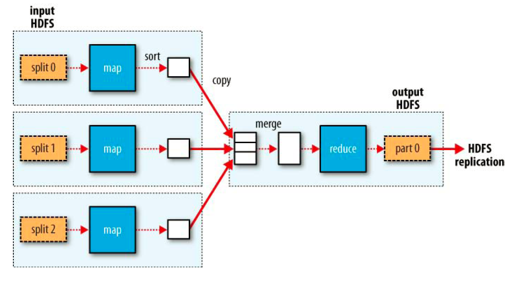
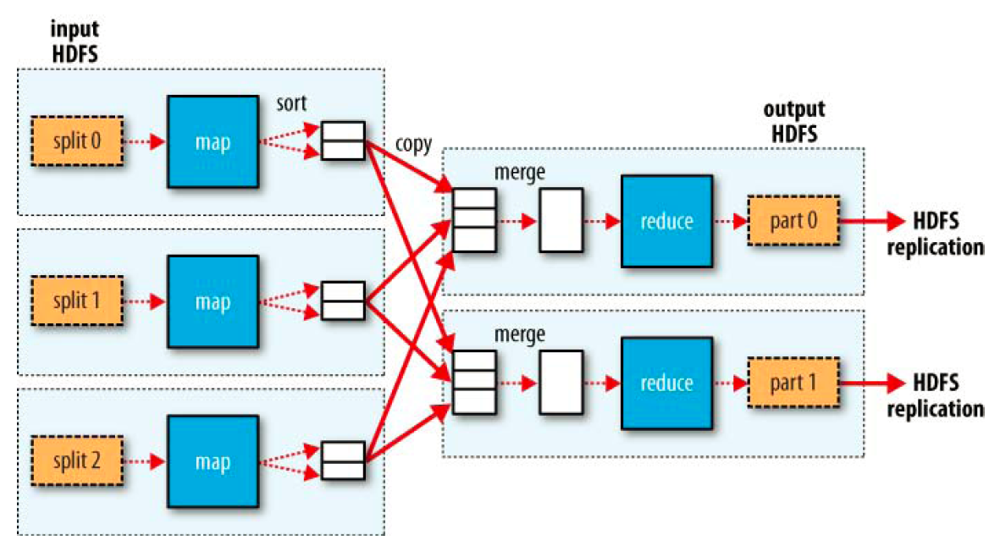
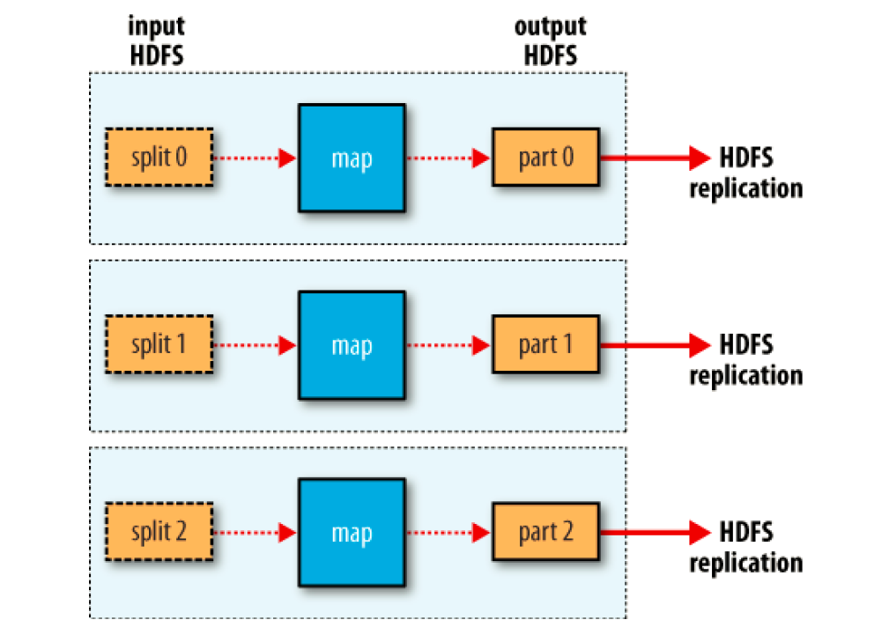
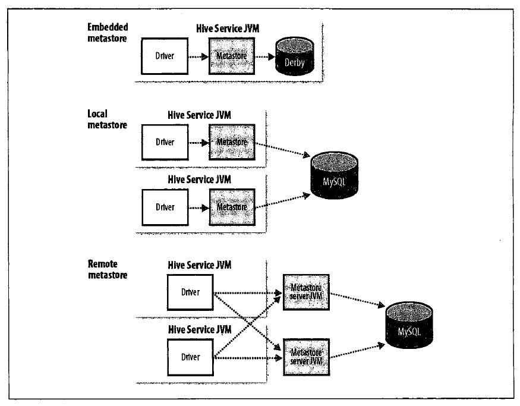

* 纽约证券交易所每天产生 1TB 的交易数据
* Facebook 存储着约 100 亿张照片，约 1PB 的存储容量
* The Internet Archive（互联网档案馆）存储着约 2PB 的数据，并以每月至少 20TB 的速度增长
* 瑞士日内瓦附件的大型强子对撞机每天产生约 15PB 的数据
并行读取（瓶颈：带宽限制-网络传输速率）。硬件故障（避免数据丢失的常用方法是使用备份）。
大多数分析任务需要以某种方式结合大部分数据共同完成分析任务， 当这些数据分开存储的时候如何处理并保证其正确性？
在大规模分布式计算环境下，协调各进程间的执行是一个很大的挑战。最困难的是合理地处理系统部分失效问题--在不知道一个远程进程失效的情况下，同时还要继续完成整个计算。
MapReduce 采用了无共享（shared-nothing）框架，所以 MapReduce 才能够实现失败检测，这意味着各个任务之间彼此独立，从程序员的角度看，任务的执行顺序是无关紧要的（失败了可再次运行，直至正确，对结果无影响）。MapReduce 系统本身控制 mapper 的输出结果传给 reducer 的过程，进程失效时，重新运行 reducer 比重新运行 mapper 更需要格外小心，因为 reducer 需要获取必要的 mapper 的输出结果。如果没有获得 mapper 的输出结果，必须运行相关的 mapper 重新生成输出结果。
Hadoop 是一个可靠的共享存储和分析系统。HDFS 实现存储，而 MapReduce 实现分析处理。
Hadoop 起源于 Apache Nutch，一个开源的网络搜索引擎。
HDFS：GFS -> NDFS -> HDFS。谷歌的分布式文件系统（GFS）或类似的架构，可以解决搜索引擎在网页爬取和索引过程中产生的超大文件的存储需求，且能够节省系统管理（如管理存储节点）所花的大量时间。NDFS 是基于该架构的开源实现，最终改名为HDFS。在谷歌发表 MapReduce 系统后，Nutch 的开发人员在 Nutch 上实现了一个 MapReduce 系统，并将所有的主要算法进行移植，在 NDFS 上运行 MapReduce 。
在 2006 年 2 月，NDFS 和 MapReduce 移除 Nutch 成为 Lucene 的一个子项目，这就是 Hadoop。
MapReduce 比较适合以批处理的方式分析整个数据集的问题，尤其是即席分析。（一次写入，多次读取，数据分析，数据挖掘）
RDBMS 适用于“点查询”（point query）和更新，数据集被索引后，数据库系统能够提供低延迟的数据检索和快速的少量数据更新。（多次读写-更新频繁，数据管理-增删改）
MapReduce 是一种可用于数据处理的编程模型。MapReduce 程序本质上是并行运行的，因此可以将大规模的数据分析任务交给一个拥有足够多机器的运营商。
MapReduce 任务过程被分为两个处理阶段：map 阶段和 reduce 阶段。每个阶段都以键/值对作为输入和输出，并由程序员选择它们的类型。
map 函数只是一个数据准备阶段，通过这种方式来准备数据，使 reduce 函数能在该准备数据上继续处理。
任务：每年全球气温的最高记录是多少？（时间跨度：一个世纪）
map 阶段的输入时原始的 NCDC 数据，行偏移量作为键，此处可忽略。
(0, 0067011990999991950051507004...99999N9+00001+999...)
(100, 0043011990999991950051507004...99999N9+00221+999...)
(328, 0043011990999991950051507004...99999N9-00111+999...)
map 函数的功能仅限于提取年份和气温信息，并将它们作为输出。
(1950, 0)
(1950, 22)
(1950, -11)
(1949, 111)
(1949, 78)
map 函数的输出经由 MapReduce 框架处理后发送到 reduce 函数，在这里为根据键/值对进行排序和分组。
(1949, [111, 78])
(1950, [0, 22, -11])
reduce 函数的功能是遍历整个输入找出最大的值。
(1949, 111)
(1950, 22)
当我们把数据存储在分布式文件系统中时，允许 Hadoop 将 MapReduce 计算移到存储有部分数据的各台机器上。
MapReduce 作业（job）是客户端需要执行的一个工作单元：它包括输入数据、MapReduce 程序和配置信息。Hadoop 将作业分成若干个小任务（task） 来执行，其中包括两类任务：map 任务和 reduce 任务。
有两类节点控制着作业执行过程：一个 jobtracker 及一系列 tasktracker。jobtracker 通过调度 tasktracker 上运行的任务，来协调所有运行在系统上作业。tasktracker在运行任务的同时将运行进度报告发送给 jobtracker, jobtracker 由此记录每项作业任务的整体进度情况。如果其中一个任务失败，jobtracker 可以去另外一个 tasktracker 节点上重新调度该任务。
Hadoop 将 MapReduce 的输入数据划分成等长的小数据块，成为输入分片（input split）或简称分片。Hadoop 为每个分片构建一个 map 任务，并由该任务来运行用户自定义的 map 函数从而处理分片中的每条记录。map 任务将其输出写入本地硬盘，而非 HDFS。
Hadoop 在存储有输入数据（HDFS 中数据）的节点上运行 map 任务，可以获得最佳性能。这就是所谓的数据本地化优化（data locality optimization）。
reduce 任务并不具备数据本地化的优势--单个 reduce 任务的输入通常来自于所有 mapper 的输出。因此，排过序的 map 输出需通过网络传输发送到运行 reduce 任务的节点。数据在 reduce 端合并，然后由用户定义的 reduce 函数处理。reduce 的输出通常存储在 HDFS 中以实现可靠存储。
对于大多数作业来说，一个合理的分片大小趋向于 HDFS 的一个块的大小，默认是 64MB。
虚线框表示节点，虚线箭头表示节点内部的数据传输，而实线箭头表示节点之间的数据传输。

map 任务和 reduce 任务之间的数据流成为 shuffle（混洗） ，因为每个 reduce 任务的输入都来自多个 map 任务。

此时，数据处理完全并行。

集群上的可用带宽限制了 MapReduce 作业的数量，因此最重要的一点是尽量避免 map 任务和 reduce 任务之的数据传输。Hadoop 允许用户针对 map 任务的输出指定一个合并函数--合并函数的输出作为 reduce 函数的输入。但是在 MapReduce 作业中使用 combiner 是需要慎重考虑的。
当数据集的大小超过一台独立物理计算机的存储能力时，就有必要对其进行分区（partition）并存储到若干台单独的计算机上。管理网络中跨多台计算机存储的文件系统称为分布式文件系统（distributed filesystem）。
默认 64M。与单一磁盘上的文件系统相似，HDFS 上的文件也被划分为块大小的多个分块（chunk），作为独立的存储单元。但与其它文件系统不同的是，HDFS 中小于一个块大小的文件不会占据整个块的空间。
namenode 管理文件系统的命名空间。它维护着文件系统树及整棵树内的所有文件和目录。
辅助 namenode
datanode 是文件系统的工作节点。
$ yum install -y java, java-1.7.0-openjdk $ java -version java version "1.7.0_51" OpenJDK Runtime Environment (rhel-2.4.4.1.el6_5-x86_64 u51-b02) OpenJDK 64-Bit Server VM (build 24.45-b08, mixed mode)
$ wget http://mirror.esocc.com/apache/hadoop/common/hadoop-1.1.2/hadoop-1.1.2-1.x86_64.rpm $ rpm -ivh hadoop-1.1.2-1.x86_64.rpm
$ vim /etc/hadoop/hadoop-env.sh 将 export JAVA_HOME=/usr/java/default 改为 export JAVA_HOME=/usr Because: $ vim /usr/bin/hadoop ... JAVA=$JAVA_HOME/bin/java ...
$ hadoop version
生成秘钥对，设置无验证 SSH 登陆，以便 Hadoop 启动集群主机集的守护进程。
$ ssh-keygen -t rsa -p '' -f ~/.ssh/id_rsa $ cat ~/.ssh/id_rsa.pub >> ~/.ssh/authorized_keys $ ssh localhost
无需运行任何守护进程（daemon），适合在开发阶段测试和调试 MapReduce 程序。
Hadoop 守护进程运行在本地机器上，模拟一个小规模的集群。
$ vim /etc/hadoop/hadoop-env.sh
export JAVA_HOME=/usr
$ vim /etc/hadoop/core-site.xml
<configuration>
<property>?
<name>fs.default.name</name>?
<value>hdfs://localhost/</value>
</property>
</configuration>
$ vim /etc/hadoop/hdfs-site.xml
<configuration>
<property>
<name>dfs.replication</name>
<value>1</value>
</property>
</configuration>
$ vim /etc/hadoop/mapred-site.xml
<configuration>
<property>?
<name>mapred.job.tracker</name>?
<value>localhost:8021</value>
</property>
</configuration>
Hadoop 守护进程运行在一个集群上。
在使用 Hadoop 之前，必须格式化一个全新的 HDFS 安装。通过创建存储目录和 namenode 持久化数据结构的初始版本，格式化过程创建了一个空的文件系统，格式化过程并不涉及 datanode。
$ hadoop namenode -format 14/02/12 01:35:29 INFO namenode.NameNode: STARTUP_MSG: /************************************************************ STARTUP_MSG: Starting NameNode STARTUP_MSG: host = vm1/127.0.0.1 STARTUP_MSG: args = [-format] STARTUP_MSG: version = 1.2.1 STARTUP_MSG: build = https://svn.apache.org/repos/asf/hadoop/common/branches/branch-1.2 -r 1503152; compiled by 'mattf' on Mon Jul 22 15:27:42 PDT 2013 STARTUP_MSG: java = 1.7.0_51 ************************************************************/ 14/02/12 01:35:30 INFO util.GSet: Computing capacity for map BlocksMap 14/02/12 01:35:30 INFO util.GSet: VM type = 64-bit 14/02/12 01:35:30 INFO util.GSet: 2.0% max memory = 129761280 14/02/12 01:35:30 INFO util.GSet: capacity = 2^18 = 262144 entries 14/02/12 01:35:30 INFO util.GSet: recommended=262144, actual=262144 14/02/12 01:35:30 INFO namenode.FSNamesystem: fsOwner=root 14/02/12 01:35:30 INFO namenode.FSNamesystem: supergroup=supergroup 14/02/12 01:35:30 INFO namenode.FSNamesystem: isPermissionEnabled=true 14/02/12 01:35:30 INFO namenode.FSNamesystem: dfs.block.invalidate.limit=100 14/02/12 01:35:30 INFO namenode.FSNamesystem: isAccessTokenEnabled=false accessKeyUpdateInterval=0 min(s), accessTokenLifetime=0 min(s) 14/02/12 01:35:30 INFO namenode.FSEditLog: dfs.namenode.edits.toleration.length = 0 14/02/12 01:35:30 INFO namenode.NameNode: Caching file names occuring more than 10 times 14/02/12 01:35:30 INFO common.Storage: Image file /tmp/hadoop-root/dfs/name/current/fsimage of size 110 bytes saved in 0 seconds. 14/02/12 01:35:30 INFO namenode.FSEditLog: closing edit log: position=4, editlog=/tmp/hadoop-root/dfs/name/current/edits 14/02/12 01:35:30 INFO namenode.FSEditLog: close success: truncate to 4, editlog=/tmp/hadoop-root/dfs/name/current/edits 14/02/12 01:35:30 INFO common.Storage: Storage directory /tmp/hadoop-root/dfs/name has been successfully formatted. 14/02/12 01:35:30 INFO namenode.NameNode: SHUTDOWN_MSG: /************************************************************ SHUTDOWN_MSG: Shutting down NameNode at vm1/127.0.0.1 ************************************************************/
$ chmod a+x /usr/sbin/start-all.sh $ chmod a+x /usr/sbin/start-dfs.sh $ chmod a+x /usr/sbin/slaves.sh $ chmod a+x /usr/sbin/start-mapred.sh $ /usr/sbin/start-all.sh
$ chmod a+x /usr/sbin/stop-all.sh $ chmod a+x /usr/sbin/stop-dfs.sh $ chmod a+x /usr/sbin/stop-mapred.sh $ /usr/sbin/stop-all.sh
$ hadoop dfsadmin -report
$ java -version
$ useradd hadoop $ groupadd hadoop
在集群的主机上进行安装。
$ chmod -R hadoop:hadoop hadoop-x.y.z
Hadoop 控制脚本依赖 SSH 来执行针对整个集群的操作。
$ ssh-keygen -t rsa -f ~/.ssh/id_rsa $ cat ~/.ssh/id_rsa.pub ~/.ssh/authorized_keys
1.hadoop-env.sh 2.core-site.xml 3.hdfs-site.xml 4.mapred-site.xml 5.masters 6.slaves
Hadoop 在主节点上运行指令来启动或终止集群内的守护进程。
配置文件 masters 和 slaves 记录了集群内的所有机器。各文件逐行记录一些机器的名称或 IP 地址。
masters： 配置运行 secondary namenode 的所有机器
slaves：配置运行 datanode 和 tasktracker 的所有机器
1. 在 namenode 机器上运行 HDFS 控制脚本。masters 文件包含 secondary namenode 的地址。
2. 在 jobtracker 机器上运行 MapReduce 控制脚本。
用于启动集群内所有的 HDFS 守护进程。
1. 在本地机器上启动一个 namenode（脚本所运行的机器）
2. 在 slaves 文件中记录的各个机器上启动一个 datanode
3. 在 masters 文件中所记录的各机器上启动一个 secondary namenode
用于启动集群中所有 MapReduce 守护进程。
1. 在本地机器上启动一个 jobtracker
2. 在 slaves 文件列举的每台机器上启动一个 tasktracker
数据如何保存到Hadoop中?
$ sqoop import --connect jdbc:mysql://localhost/hadoopguide --table widgets -m 1 $ hadoop fs -cat widgets/part-m-00000
$ hadoop fs -mkdir test $ hadoop fs -chmod a+w test $ hadoop fs -chmod g+w test $ hadoop fs -put a.txt test $ hadoop dfs -ls test
$ hadoop jar /usr/share/hadoop/hadoop-examples-1.1.2.jar wordcount test output $ hadoop dfs -cat /user/root/output/part-r-00000
Hive 是一个基于 Hadoop 的数据仓库工具，它管理 HDFS 中存储的数据，可以将结构化的数据文件映射为一张数据表，并提供基于 SQL 的查询语言（运行时由引擎翻译成 MapReduce 作业）用以查询数据。
Hive 是应 Facebook 每天产生的海量新兴网络数据进行管理和学习的需求而产生和发展的。
Hive 的设计目的是让精通 SQL 技能（但 Java 编程技能相对较弱）的分析师能够在 Facebook 存放在 HDFS 的大规模数据集上运行查询。
下载地址：http://www.apache.org/dyn/closer.cgi/hive/，直接解压到指定的路径即可。
$ java -version $ tar xzvf hive-0.11.0.tar.gz $ mv hive-0.11.0 /opt/hive
* 设置环境变量
$ vim ~/.bashrc export HIVE_INSTALL=/opt/hive export PATH=$PATH:$HIVE_INSTALL/bin $ source ~/.bashrc $ hive
$ hive --config /opt/hive/conf $ hive -hiveconf fs.default.name=localhost -hiveconf mapred.job.tracker=localhost:8021 hive > SET hive.enforce.bucketing=true;
不带参数的SET会列出Hive的所有配置信息。
hive > SET; hive > SET -v; #列出系统中的所有属性 hive > SET fs.default.name; hive > SET mapred.job.tracker; hive > SET hive.metastore.warehouse.der;
$ hive -hiveconf hive.root.logger=DEBUG,console
<configuration>
<property>
<name>javax.jdo.option.ConnectionURL</name>
<value>jdbc:mysql://192.168.0.25:3306/metastore_db?createDatabaseIfNotExist=true</value>
</property>
<property>
<name>javax.jdo.option.ConnectionDriverName</name>
<value>com.mysql.jdbc.Driver</value>
</property>
<property>
<name>javax.jdo.option.ConnectionUserName</name>
<value>hive</value>
</property>
<property>
<name>javax.jdo.option.ConnectionPassword</name>
<value>123456</value>
</property>
<property>
<name>hive.aux.jars.path</name>
<value>file:///opt/hive/lib/hive-contrib-0.11.0.jar</value>
</property>
</configuration>
HiveSQL 一般是大小写无关的（除了字符串比较外），命令必须以分号结束，以告诉 Hive 立即执行该命令。
$ hive -f script.txt $ hive -e "SHOW TABLES" $ hive -S $ hive hive > show tables;
让 Hive 以提供 Trift 服务的服务器形式运行，允许用不同语言编写的客户端进行访问。
$ hive --service hiveserver
Hive Thrift 客户端简化了在多种编程语言中运行 Hive 命令。Hive 的 Thrift 绑定支持 C++、Java、PHP、Python 和 Ruby。
存储表模式及相对应的 Hadoop 文件等信息。
默认情况下，metastore 服务和 Hive 服务运行在同一个 JVM 中，它包含一个内嵌的以本地磁盘作为存储的 Derby 数据库实例。此时，你只能为每个 metastore 打开一个 Hive 会话。
hive > SET javax.jdo.option.ConnectionURL; javax.jdo.option.ConnectionURL=jdbc:derby:;databaseName=metastore_db;create=true
使用独立的数据库以支持多会话（以及多用户）。
$ touch /opt/hive/conf/hive-site.xml <configuration> <property> <name>javax.jdo.option.ConnectionURL</name> <value>jdbc:mysql://192.168.0.250:3306/metastore_db?createDatabaseIfNotExist=true</value> </property> <property> <name>javax.jdo.option.ConnectionDriverName</name> <value>com.mysql.jdbc.Driver</value> </property> <property> <name>javax.jdo.option.ConnectionUserName</name> <value>hive</value> </property> <property> <name>javax.jdo.option.ConnectionPassword</name> <value>123456</value> </property> </configuration> $ cp mysql-connector-java-5.1.25-bin.jar /opt/hive/lib/ mysql > grant all privileges on *.* to 'hive'@'%' identified by '123456'; mysql > flush privileges; mysql > source /opt/hive/scripts/metastore/upgrade/mysql/hive-schema-0.10.0.mysql.sql
hive > SET hive.metastore.local false hive > SET hive.metastore.uris thrift://host:port,...

HiveSQL 是 SQL 的方言（dialect），它并不完全支持 SQL-92 标准。
hive > CREATE TABLE complex (
> col1 ARRAY<INT>,
> col2 MAP<STRING, INT>,
> col3 STRUCE<a:STRING, b:INT, c:DOUBLE>
> );
hive > SELECT col1[0]，col2['b'], col3.c FROM complex;
hive > SHOW FUNCTIONS; hive > DESCRIBE FUNCTION length;
数据归Hive管理，存放在/user/hive/warehouse/table。
hive > CREATE TABLE test(id INT, col1 STRING)
> ROW FORMAT DELIMITED FIELDS TERMINATED BY '\t';
hive > LOAD DATA LOCAL INPATH '/tmp/test.txt' OVERWRITE INTO TABLE test;
hive > LOAD DATA INPATH '/user/root/test/*' OVERWRITE INT TABLE test;
$ hadoop fs -ls /user/hive/warehouse/test
数据不归Hive管理，数据存放路径需在定义表时指定。
hive > CREATE EXTERNAL TABLE test (value STRING)
> LOCATION '/user/root/test';
hive > LOAD DATA INPATH '/user/root/a.txt' OVERWRITE INTO TABLE test;
hive > LOAD DATA LOCAL INPATH '/tmp/a.txt' OVERWRITE INTO TABLE test;
删除表时，托管表会连数据一起删除，外部表不会。
hive > DROP TABLE test; $ hadoop fs -ls /user/hive/warehouse/test #托管表数据存放路径 $ hadoop fs -ls /user/root/test #外部表数据存放路径
使用分区可以加快数据分片（slice）的查询速度。
根据分区条件把文件放到分区文件夹中，相当于根据分区条件进行了一次过滤，那么根据分区进行条件查询会比未分区快。
使用分区时相关的列会转换成对应的目录名称，数据文件不再保存分区列（partition column）的数据，即 PARTITION BY 子句中的列定义是表中正式的列，它的值就是目录名。
hive > CREATE TABLE test (col2 STRING, col4 STRING)
> PARTITIONED BY (col1 STRING, col3 STRING)
> ROW FORMAT DELIMITED FIELDS TERMINATED BY '\t';
hive > LOAD DATA LOCAL INPATH '/tmp/test.txt' INTO TABLE test
> PARTITION (col1='a', col3='c');
hive > SHOW PARTITIONS test;
为数据提供额外的结构以获得更高效的查询处理。
连接两个在（包含连接列的）相同列上划分了桶的表，可以使用 map 端连接（map-side join）高效地实现。
我们使用 CLUSTERED BY 子句来指定划分桶所用的列和要划分的桶的个数：
hive > SET hive.enforce.bucketing=true;
hive > CREATE TABLE bucketed_users(id INT, name STRING)
> CLUSTERED BY (id) INTO 4 BUCKETS;
hive > CREATE TABLE bucketed_users(id INT, name STRING)
> CLUSTERED BY (id) SORTED BY (id ASC) INTO 4 BUCKETS;
hive > INSERT OVERWRITE TABLE bucketed_users
> SELECT * FROM users;
hive > SELECT * FROM bucketed_users
> TABLESAMPLE(BUCKET 2 OUT OF 4 ON day); #取其中1桶的数据
hive > SELECT * FROM bucketed_users
> TABLESAMPLE(BUCKET 1 OUT OF 2 ON day); #取一半的数据
Hive 从两个维度对表的存储进行管理： “行格式”（row format）和“文件格式”（file format）。
行格式指行和一行中的字段如何存储。Hive 中的行格式由 SerDe 定义。SerDe 是 “序列化和反序列化工具” （Serializer - Deserializer）的合成词。
hive > CREATE TABLE test(id INT, value STRING)
> ROW FORMAT DELIMITED
> FIELDS TERMINATED BY '\t';
hive > CREATE TABLE stations (usaf STRING, wban STRING, name STRING)
> ROW FORMAT SERDE 'org.apache.hadoop.hive.contrib.serde2.RegexSerDe'
> WITH SERDEPROPERTIES (
> "input.regex" = "(\\d{6})(\\d{5})(.{29}) .*"
> );
hive > CREATE TABLE apache_access_log (
> host STRING,
> identity STRING,
> user STRING,
> time STRING,
> request STRING,
> status STRING,
> size STRING,
> referer STRING,
> agent STRING
> )
> ROW FORMAT SERDE 'org.apache.hadoop.hive.contrib.serde2.RegexSerDe'
> WITH SERDEPROPERTIES (
> "input.regex" = "([^ ]*) ([^ ]*) ([^ ]*) (-|\\[[^\\]]*\\]) ([^ \"]*|\"[^\"]*\") (-|[0-9]*) (-|[0-9]*)(?: ([^ \"]*|\".*\") ([^ \"]*|\".*\"))?",
> "output.format.string" = "%1$s %2$s %3$s %4$s %5$s %6$s %7$s %8$s %9$s"
> )
> STORED AS TEXTFILE;
hive > LOAD DATA LOCAL INPATH '/var/log/apache/access_log' INTO TABLE apache_access_log;
hive > select * from apache_access_log;
hive > INSERT OVERWRITE TABLE target
> SELECT * FROM source;
hive > INSERT OVERWRITE TABLE target
> PARTITION (dt='2013-07-18')
> SELECT col1, col2 FROM source;
hive > SET hive.exec.dynamic.partition=true;
hive > INSERT OVERWRITE TABLE target
> PARTITION (dt)
> SELECT col1, col2, dt FROM source;
hive > FROM srouce
> INSERT OVERWRITE TABLE target1
> SELECT col1, COUNT(col2) GROUP BY col1
> INSERT OVERWRITE TABLE target2
> SELECT col1, COUNT(DISTINCT col2) GROUP BY col1
> INSERT OVERWRITE TABLE target3
> SELECT col1, COUNT(col2) WHERE col3='2013' GROUP BY col1;
CTAS 是原子操作，因此如果 SELECT 查询由于某种原因失败，是不会创建新表的。
hive > CREATE TABLE target
> AS
> SELECT col1, col2 FROM source;
hive > SELECT *
> FROM sales
> JOIN things ON (sales.id = things.id);
hive > SELECT *
> FROM sales
> LEFT OUTER JOIN things ON (sales.id = things.id);
hive > SELECT *
> FROM sales
> RIGHT OUTER JOIN things ON (sales.id = things.id);
hive > SELECT *
> FROM sales
> FULL OUTER JOIN things ON (sales.id = things.id);
hive > SELECT *
> FROM things
> LEFT SEMI JOIN sales ON (sales.id = things.id);
hive > SELECT /*+ MAPJOIN(things) */ sales.*, things.*
> FROM sales
> JOIN things ON (sales.id = things.id);
hive > select to_date(created_at) from access_log;
Hive支持文件夹的方式，将文件夹内的所有文件，都load到指定表中。HDFS会将文件系统内的某文件夹路径内的文件，分散到不同的实际物理地址中。这样，在数据量很大的时候，Hive支持读取多个文件载入，而不需要限定在唯一的文件中。
hive > LOAD DATA LOCAL INPATH '/tmp/test/*.txt' OVERWRITE INTO TABLE test PARTITION（pt=’xxxx）;